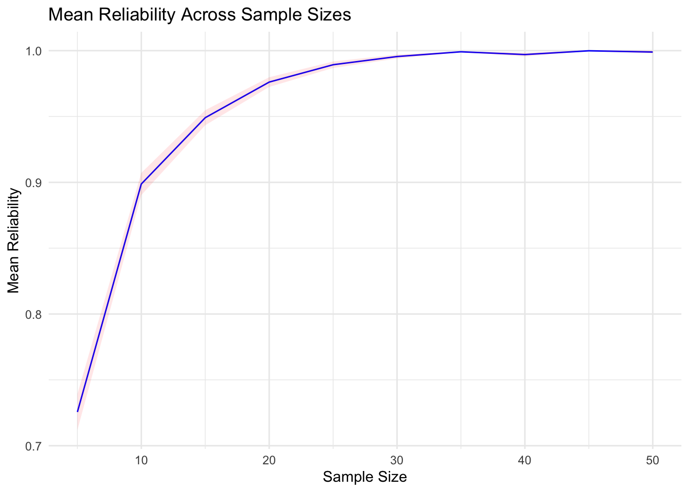
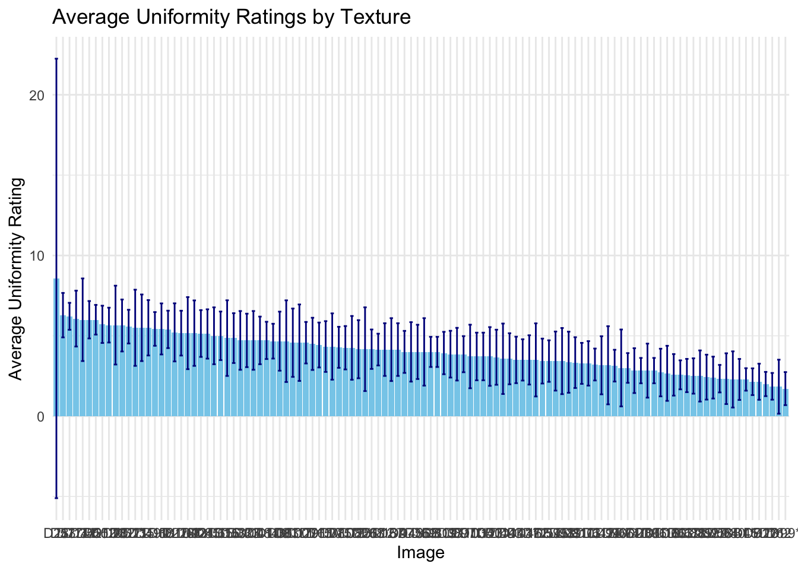
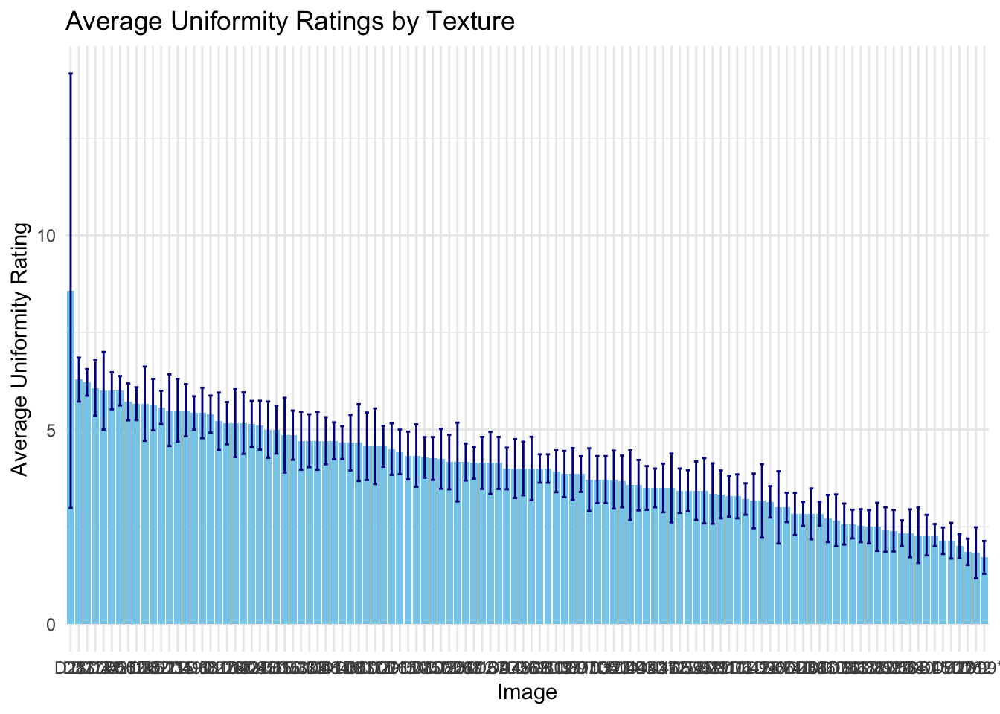

#rm(list = ls())
# List of packages
packages <- c("corrr", "ggplot2", "lme4", "lmerTest", "FactoMineR", "grid","png","cowplot","magick", "ggimage","dplyr","tidyverse","knitr", "jsonlite")Haptic Texture Uniformity Ratings
Load packages
install_and_load_packages <- function(packages) {
for(package in packages) {
if(!require(package, character.only = TRUE)) {
install.packages(package, dependencies = TRUE)
library(package, character.only = TRUE)
}
}
}
# Call the function with the list of packages
install_and_load_packages(packages)Loading required package: corrrLoading required package: ggplot2Loading required package: lme4Loading required package: MatrixLoading required package: lmerTest
Attaching package: 'lmerTest'The following object is masked from 'package:lme4':
lmerThe following object is masked from 'package:stats':
stepLoading required package: FactoMineRLoading required package: gridLoading required package: pngLoading required package: cowplotLoading required package: magickWarning: package 'magick' was built under R version 4.3.3Linking to ImageMagick 6.9.12.93
Enabled features: cairo, fontconfig, freetype, heic, lcms, pango, raw, rsvg, webp
Disabled features: fftw, ghostscript, x11Loading required package: ggimage
Attaching package: 'ggimage'The following object is masked from 'package:cowplot':
theme_nothingLoading required package: dplyr
Attaching package: 'dplyr'The following objects are masked from 'package:stats':
filter, lagThe following objects are masked from 'package:base':
intersect, setdiff, setequal, unionLoading required package: tidyverse── Attaching core tidyverse packages ──────────────────────── tidyverse 2.0.0 ──
✔ forcats 1.0.0 ✔ stringr 1.5.0
✔ lubridate 1.9.3 ✔ tibble 3.2.1
✔ purrr 1.0.1 ✔ tidyr 1.3.0
✔ readr 2.1.5
── Conflicts ────────────────────────────────────────── tidyverse_conflicts() ──
✖ tidyr::expand() masks Matrix::expand()
✖ dplyr::filter() masks stats::filter()
✖ dplyr::lag() masks stats::lag()
✖ tidyr::pack() masks Matrix::pack()
✖ lubridate::stamp() masks cowplot::stamp()
✖ tidyr::unpack() masks Matrix::unpack()
ℹ Use the conflicted package (<http://conflicted.r-lib.org/>) to force all conflicts to become errors
Loading required package: knitrWarning: package 'knitr' was built under R version 4.3.3Loading required package: jsonlite
Attaching package: 'jsonlite'
The following object is masked from 'package:purrr':
flattenknitr::opts_chunk$set(echo = TRUE, warning = FALSE, message = FALSE)Set working directories
current_dir<- getwd()
data_dir <-paste0(current_dir,'/../data/')
data_files <-list.files(path = data_dir, full.names = TRUE, pattern="*.csv")
print(paste0('we have data from ',length(data_files),' participants'))[1] "we have data from 20 participants"Load in data and filter our texture ids
df_list <- lapply(data_files, read.csv)
experiment_data_raw<- bind_rows(df_list)
ratings_trials<- experiment_data_raw %>% filter(trial_type== 'survey-text')
#correct recorded errors
# participant 20 texture d15 response should be 2.5
#### For now leaving as is and just removing NAs, but fix later once code works
ratings_trials_exp <- ratings_trials %>%
mutate(response = map_chr(response, ~ fromJSON(.x)$Q0)) %>%
mutate(response = as.numeric(response)) %>%
filter(!is.na(response)) # Optionally remove rows with NA responses
# extract_texture_id<-function(filename){
# f<- str_split_i(filename,"/",2)
# f<- str_split_i(f,".png",1)
# return(f)
#
# }
#ratings_trials_exp$texture <- lapply(ratings_trials_exp$texture_id,extract_texture_id)
# Create condition_num column based on texture list
ratings_trials_exp <- ratings_trials_exp %>%
mutate(condition_num = case_when(
list_name == "textures_list1" ~ 1,
list_name == "textures_list2" ~ 2,
list_name == "textures_list3" ~ 3
))
# unique_sona_ids <- unique(ratings_trials_exp$sona_id)
# cat(paste(unique_sona_ids, collapse = ", "))t<-ratings_trials_exp %>%
group_by(condition_num) %>%
summarise(unique_subjects = n_distinct(subject_id))
texture_groups <- ratings_trials_exp %>%
select(texture, condition_num) %>%
distinct() %>%
arrange(condition_num)bootstrap_ratings<- function(ratings_df, sample_size){
group1ids<- ratings_df %>%
group_by(condition_num) %>%
sample_n(sample_size,replace = TRUE)%>%select(subject_id)
group2ids <- ratings_df %>%
# filter(!subject_id %in% group1ids$subject_id) %>%
group_by(condition_num) %>%
sample_n(sample_size, replace = TRUE) %>%
select(subject_id)
group1df<-ratings_df%>%filter(subject_id%in%group1ids$subject_id)
group2df<-ratings_df%>%filter(subject_id%in%group2ids$subject_id)
group1mat<- group1df%>% group_by(texture) %>%summarise(mean_rating = mean(response),.groups='keep')%>%
pivot_wider(names_from = texture, values_from = mean_rating)
group2mat<- group2df%>% group_by(texture) %>%summarise(mean_rating = mean(response),.groups='keep')%>%
pivot_wider(names_from = texture, values_from = mean_rating)
#concept_names <- group1mat$concept # Preserve concept names in correct order for later
#group1mat <- group1mat[order(group1mat$concept), -1] # Remove concept column
#group2mat <- group2mat[order(group2mat$concept), -1] # Remove concept column
common_columns <- intersect(colnames(group1mat), colnames(group2mat)) # Find common columns
group1mat <- group1mat[, sort(common_columns)]
group2mat <- group2mat[, sort(common_columns)]
rowwise_correlations <- mapply(function(row1, row2) {
cor(row1, row2, use = "pairwise.complete.obs")
}, as.data.frame(t(group1mat)), as.data.frame(t(group2mat)))
# # Create dataframe of concept-wise correlations
# correlation_df <- data.frame(
# concept = concept_names,
# correlation = rowwise_correlations
# )
# Compute mean correlation
mean_correlation <- mean(rowwise_correlations, na.rm = TRUE)
return(mean_correlation)
}iters<-numeric()
sample_sizes<-numeric()
mean_rs<-numeric()
#correlation_dfs<-list()
for(iter in 1:100){
for(sample_size in seq(5, 50, by = 5)){
result <- bootstrap_ratings(ratings_trials_exp, sample_size)
mean_rs <- c(mean_rs, result)
#correlation_dfs[[length(correlation_dfs) + 1]] <- result$correlation_df
iters <- c(iters, iter)
sample_sizes <- c(sample_sizes, sample_size)
}
}
bootstrap_df <- data.frame(cbind( iters,sample_sizes,mean_rs
))
colnames(bootstrap_df)<- c('iteration','sample_size','mean_reliability')
# Summarize data to calculate mean and standard error for each sample_size
summary_results <-bootstrap_df %>%
group_by(sample_size) %>%
summarise(
se_reliability = sd(mean_reliability, na.rm = TRUE) / sqrt(n()),
mean_reliability = mean(mean_reliability, na.rm = TRUE),
)
# Create ggplots
ggplot(summary_results, aes(x = sample_size, y = mean_reliability)) +
geom_line(color = "blue") +
geom_ribbon(aes(ymin = mean_reliability - se_reliability,
ymax = mean_reliability + se_reliability),
alpha = 0.1, fill = "red") +
labs(
title = "Mean Reliability Across Sample Sizes",
x = "Sample Size",
y = "Mean Reliability"
) +
theme_minimal()
##Determining Subset
#Confidence Intervals
ci_data <- ratings_trials_exp %>%
group_by(texture) %>%
summarise(
mean_rating = mean(response, na.rm = TRUE),
ci_lower = mean(response, na.rm = TRUE) - qt(0.975, df = n() - 1) * sd(response, na.rm = TRUE) / sqrt(n()),
ci_upper = mean(response, na.rm = TRUE) + qt(0.975, df = n() - 1) * sd(response, na.rm = TRUE) / sqrt(n()),
.groups = "drop" # Drop grouping after summarize
)
# View the confidence intervals
print(ci_data)# A tibble: 112 × 4
texture mean_rating ci_lower ci_upper
<chr> <dbl> <dbl> <dbl>
1 D1 5.4 4.24 6.56
2 D10 3.29 2.01 4.56
3 D100 4.57 2.45 6.70
4 D101 5 3.23 6.77
5 D102* 5.71 4.55 6.87
6 D103 3.71 1.74 5.69
7 D104 5.17 3.77 6.56
8 D105 3.71 2.23 5.20
9 D106 5.67 4.58 6.75
10 D107 2.71 1.23 4.20
# ℹ 102 more rowsci_data <- ci_data %>%
arrange(desc(mean_rating))
ci_data# A tibble: 112 × 4
texture mean_rating ci_lower ci_upper
<chr> <dbl> <dbl> <dbl>
1 D28 8.57 -5.10 22.2
2 D53 6.29 4.90 7.67
3 D77 6.21 5.38 7.05
4 D14 6.07 4.33 7.81
5 D34 6 3.43 8.57
6 D52 6 4.84 7.16
7 D55 6 5.08 6.92
8 D102* 5.71 4.55 6.87
9 D106 5.67 4.58 6.75
10 D20 5.67 3.21 8.12
# ℹ 102 more rows#Error
error_data <- ratings_trials_exp %>%
group_by(texture) %>%
summarise(
mean_rating = mean(response, na.rm = TRUE),
se = sd(response, na.rm = TRUE) / sqrt(n()), # Standard error of the mean
error_lower = mean_rating - se, # Lower bound for error bars
error_upper = mean_rating + se, # Upper bound for error bars
.groups = "drop" # Drop grouping after summarize
)
# View the error bars
print(error_data)# A tibble: 112 × 5
texture mean_rating se error_lower error_upper
<chr> <dbl> <dbl> <dbl> <dbl>
1 D1 5.4 0.476 4.92 5.88
2 D10 3.29 0.522 2.76 3.81
3 D100 4.57 0.869 3.70 5.44
4 D101 5 0.724 4.28 5.72
5 D102* 5.71 0.474 5.24 6.19
6 D103 3.71 0.808 2.91 4.52
7 D104 5.17 0.543 4.62 5.71
8 D105 3.71 0.606 3.11 4.32
9 D106 5.67 0.422 5.25 6.09
10 D107 2.71 0.606 2.11 3.32
# ℹ 102 more rows# Arrange data by mean rating in descending order
error_data <- error_data %>%
arrange(desc(mean_rating))
error_data# A tibble: 112 × 5
texture mean_rating se error_lower error_upper
<chr> <dbl> <dbl> <dbl> <dbl>
1 D28 8.57 5.59 2.98 14.2
2 D53 6.29 0.565 5.72 6.85
3 D77 6.21 0.343 5.87 6.56
4 D14 6.07 0.711 5.36 6.78
5 D34 6 1 5 7
6 D52 6 0.476 5.52 6.48
7 D55 6 0.378 5.62 6.38
8 D102* 5.71 0.474 5.24 6.19
9 D106 5.67 0.422 5.25 6.09
10 D20 5.67 0.955 4.71 6.62
# ℹ 102 more rows# ci
ggplot(ci_data, aes(x = reorder(texture, -mean_rating), y = mean_rating)) +
geom_bar(stat = "identity", fill = "skyblue") +
geom_errorbar(aes(ymin = ci_lower, ymax = ci_upper), width = 0.5, color = "darkblue") +
labs(
title = "Average Uniformity Ratings by Texture",
x = "Image",
y = "Average Uniformity Rating"
) +
theme_minimal() +
theme(
#axis.text.x = element_blank(), # Remove x-axis text labels
#axis.ticks.x = element_blank() # Remove x-axis ticks
)
ggplot(error_data, aes(x = reorder(texture, -mean_rating), y = mean_rating)) +
geom_bar(stat = "identity", fill = "skyblue") +
geom_errorbar(aes(ymin = error_lower, ymax = error_upper), width = .5, color = "darkblue") +
labs(
title = "Average Uniformity Ratings by Texture",
x = "Image",
y = "Average Uniformity Rating"
) +
theme_minimal() +
theme(
#axis.text.x = element_blank(), # Remove x-axis text labels
#axis.ticks.x = element_blank() # Remove x-axis ticks
)